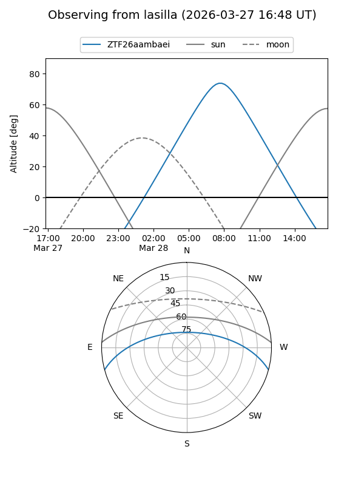
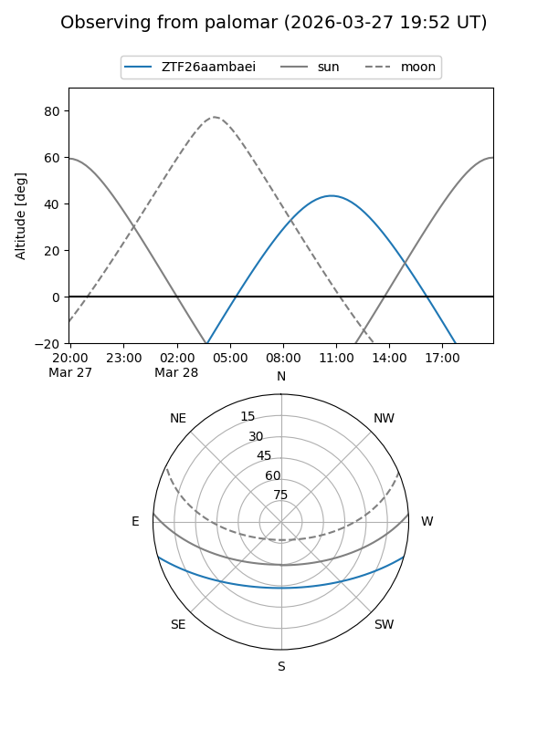

ZTF26aambaei
Target ZTF26aambaei at 2026-03-27 13:50
Aliases and brokers:
FINK: link
Lasair: link
ALeRCE: link
alt names
ZTF26aambaei (ztf,fink_ztf)
Coordinates:
equatorial (ra, dec) = 229.7210,-13.11236
equatorial (HMS+DMS) = 15:18:53.03,-13:06:44.50
galactic (l, b) = (349.2881,+36.16112)
Flags:
Photometry:
last ztfg=16.34
2 ztfg detections
Lightcurve
Visibility


Additional plots